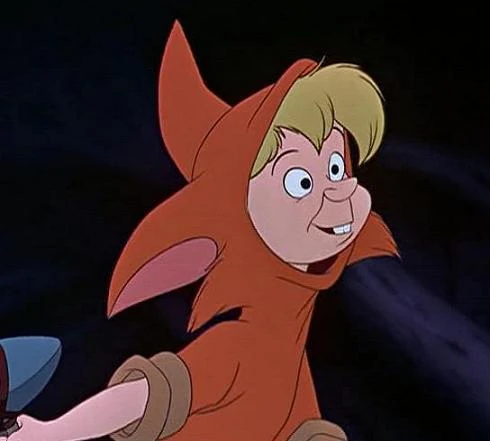

Welcome to the Fairies Home - PeterPan !!!
Fairies are residents of NeverLand. Fairies have their own specialized magical powers.

Slightly Soiled
Slightly Soiled $2.
Slightly Soiled is one of the Lost Boys known for attempting to speak with a sophisticated vocabulary, often using words incorrectly. !!!